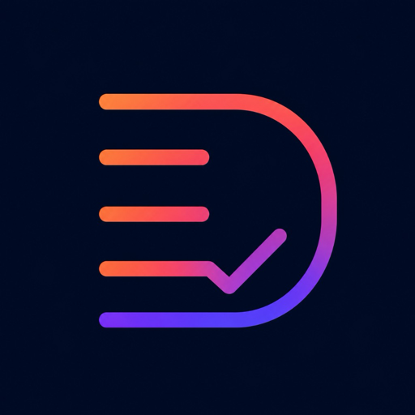

Dashday
Your day, clearly ordered.
Offline-first to-dos for iPhone, iPad, Mac, and Watch — chronological, calm, no clutter.
One day. One list.
Dashday thinks in days — Today, Tomorrow, the day after. Tasks land in a chronological stream, not endless projects. Done is done. Move overdue items to today with one tap.
Capture thoughts before they’re gone
Dictate, type, share, or brain-dump — Dashday understands free-form speech and sets title and date on-device. The Action Button opens the mic. Pause to save.
Right where Apple already is
No extra ecosystem. Dashday waits in the places you already use.
- Apple Watch A real companion app — dictate, save, sync, even without the iPhone in hand.
- Siri & Shortcuts “Dashday”, for today or tomorrow, brain dump — quietly, without opening the app.
- Action Button One press → microphone. Speak, pause, todo saved.
- Home & Lock Screen widgets Today’s open todos. Complete in place, without launching the app.
- Share From Safari, Mail, or Notes → becomes a task for today.
- Spotlight Find tasks before you open the app.
- Apple Intelligence Optional morning briefing — on-device summary, no server required.
A quiet start
At the time you choose, a short on-device summary of your open days. Notifications only if you want them. No cloud-AI requirement — Foundation Models on device when Apple Intelligence is available.
Local first. Sync when you want.
Everything stays on device by default. Optional cloud sync keeps iPhone, iPad, Mac, and Watch aligned. Daily CSV backup to iCloud Drive or Google Drive. Delete your account in the app.
No tracking. No feed. No gamification.
Ready for your day?
Dashday is on TestFlight and preparing for the App Store.